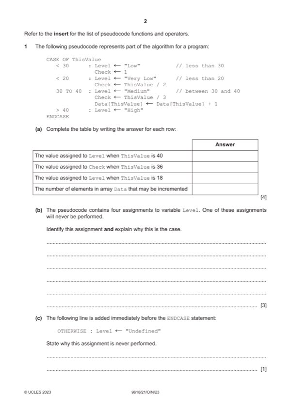

Question 1

Original paper page 2
Part 1(a) — solution
One mark per row: 4
Answer
The value assigned to Level when ThisValue is 40 "Medium"
The value assigned to Check when ThisValue is 36 12
The value assigned to Level when ThisValue is 18 "Low"
The number of elements in array Data that may be 11
incremented
Mark points
- Include the ideas shown in the solution above.
Part 1(b) — solution
One mark for identifying assignment: 3
MP1 Level "Very Low" // the level is assigned value “very low”
Explanation points:
MP2 because CASE clauses are checked in sequence // because of the order
of the clauses
MP3 a value < 30 satisfies the first clause // Clause '< 20' will never be tested
Mark points
- Include the ideas shown in the solution above.
Part 1(c) — solution
MP1 all of the possible values are addressed via all / four / three / the other 1
clauses // there are no other possible values to map to OTHERWISE
Mark points
- Include the ideas shown in the solution above.
Part 1(d) — solution
- ThisValue: INTEGER
- Check: REAL
- Level: STRING
Mark points
- ThisValue: INTEGER
- Check: REAL
- Level: STRING